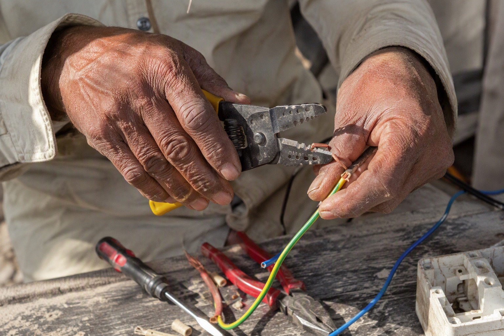

Reading the Markings Printed on Finolex Wire (What They Mean)

Genuine Finolex wire carries repeating printed markings along the insulation identifying the brand, the conductor size, the voltage rating and the applicable IS standard. Duplicates reproduce these markings but rarely with the same spacing consistency and character definition. This check works on wire already unrolled, already cut, and even after the carton is gone — which makes it the one verification available when everything else has been discarded.
What the markings say
| Element | What it means |
|---|---|
| Brand name | The manufacturer, printed at regular intervals along the length |
| Conductor size | The nominal cross-section in sq mm — 1.0, 1.5, 2.5, 4.0, 6.0 |
| Voltage rating | Typically 1100V for domestic house wire |
| Standard reference | The Indian Standard the cable is manufactured to |
| Grade indication | FR, FR-LSH or the premium range designation |
| Sequential metre marking | Running length marking, where the range carries it — useful for checking coil length |
What the printing quality tells you
The content of the markings is easy to copy. The quality and consistency are not, because they come from production-line printing equipment running continuously at speed. Look for:
- Even spacing. The interval between repeats should be regular along the whole length. Drifting or irregular intervals indicate a slower, cruder printing process.
- Crisp character edges. Letters should be sharply defined, not fuzzy or bleeding into the insulation.
- Consistent depth of colour. Printing that fades in and out along the run is a strong signal.
- No missing stretches. Long unmarked gaps are common on counterfeits and rare on genuine production.
- Legibility after handling. Genuine marking survives being pulled through conduit. Printing that rubs off between your fingers is a finding.
Unroll a full metre, not fifty centimetres. Counterfeits often get the first few repeats right and deteriorate after that.
Using the sequential metre marking
Where the wire carries running length numbers, they answer a question the carton cannot: is the coil actually the length it claims? Short coils are one of the most profitable and least detectable tricks in this trade, because a homeowner never measures 90 metres and the shortfall disappears into the job. Note the number at the outer end of a fresh coil and again at the inner end — the difference should be close to the marked length.
This is a strong argument for buying sealed cartons in the first place, which is covered in why 90-metre boxes are the safe default. Loose or cut wire carries no carton, no QR code and no accountability for length.
Why this check matters most after the fact
Every other verification depends on having the packaging. The QR codes need a carton; the seal check needs a seal; the price check needs an invoice. Insulation markings are printed on the product itself, so they remain available when:
- Your contractor supplied the wire and discarded the boxes.
- You are inspecting an existing house before buying it.
- Wire is already pulled into conduit and only the tails are visible.
- You are checking a partially used coil left on site.
In those situations this is the check you have. Combine it with a look at the copper at a cut end, and you can form a reasonable judgement without any packaging at all.
What to do if the markings look wrong
- Photograph a length of the wire showing several repeats of the marking, in good light.
- Cut a short sample and examine the copper — strand count, thickness and colour.
- Stop the installation before more of it goes into walls.
- Retrieve the cartons if they still exist, and check the QR codes.
- Raise it with whoever supplied it, following the complaint route.
Buying Finolex in Bangalore? Mount Cable India is one of the largest distributors of Finolex cables in the country. WhatsApp your list to 88676 76700 for an exact quote within 60 minutes — free next-day delivery, pay on delivery, and you scan and verify every box at your site before any money changes hands.
Frequently asked questions
What markings are printed on genuine Finolex wire?
How do markings help identify duplicate wire?
Can I check wire authenticity without the box?
What is the sequential metre marking used for?
Should printed markings rub off the wire?
What should I do if wire is already installed and the markings look wrong?
Ready to order for your home?
Upload your wiring list for an instant quote — 100% original material, free next-day delivery across Bangalore.